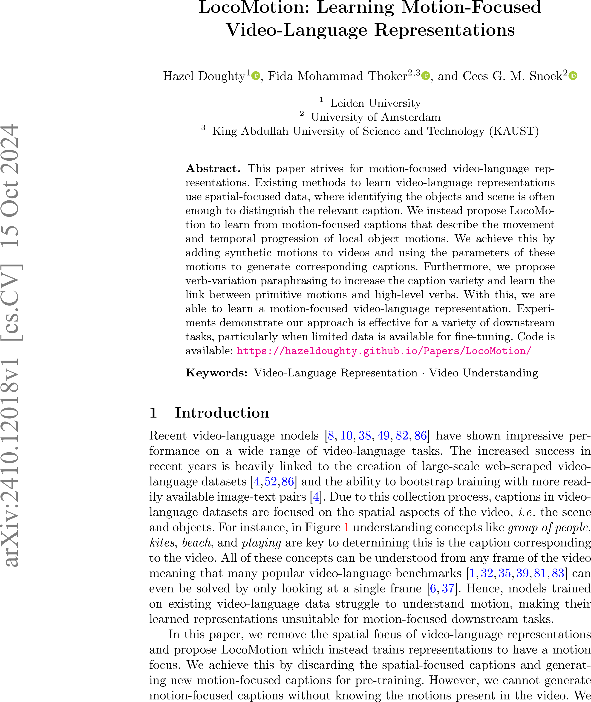

Abstract
This paper strives for motion-focused video-language representations. Existing methods to train video-language representations learn using spatial-focused data where identifying the objects and scene is often enough to distinguish the relevant caption. We instead propose LocoMotion to learn from motion-focused captions that describe the movement and temporal progression of local object motions. We achieve this by adding synthetic motions to videos and using the parameters of these motions to generate corresponding captions. Furthermore, we propose verb variation paraphrasing to increase the caption variety and learn the link between primitive motions and high-level verbs. With this, we are able to learn a motion-focused video-language representation. Experiments demonstrate our approach is effective for a variety of downstream tasks, particularly when limited data is available for fine-tuning
|  | Hazel Doughty, Fida Mohammad Thoker, Cees G. M. Snoek |